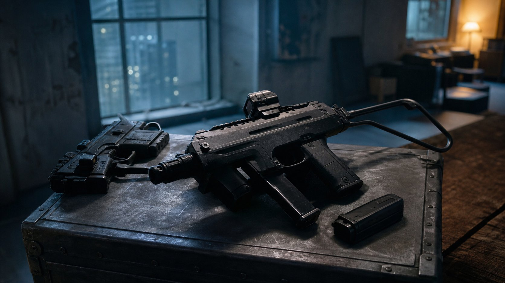

1. Rôle dans le meta S7
Le P90 (900 RPM, S-tier) domine les intérieurs : TTK imbattable à moins de 15 m. Vector .45 (1 200 RPM !) fond sur tout ce qui bouge, MPX avec Vulcan Barrel S7 = dégâts chairs absurdes, PCC9 + Fully-Automatic Kit S7 = D-tier devenu A-tier du jour au lendemain. VSS (9x39 subsonic) reste le couteau furtif des Forbidden lobbies.
2. Conseils de jeu
- Munitions d'abord : en S7, la RNG de pénétration T5/T6 a disparu — la bonne mun gagne presque toujours. Tier 3 minimum, Tier 4-5 pour les modes haut de gamme.
- Caps par mode : Normal = T4 max, Lockdown = T5 max, Forbidden = T6. Adaptez votre kit au lobby, pas à votre ego.
- Dum-Dum (9mm / .45) : contre les zombies S7 et les jambes non blindées, c'est le choix qui renverse les lobbies.
- MPX Vulcan : visez les jambes — le build est pensé pour ignorer les T6 chest.
- Rechargez AVANT chaque intérieur, pas après.
À retenir
Un SMG à plus de 30 m est un bruit de fond. Rangez-le dès que le terrain s'ouvre.
Meta complet
Croisez ces analyses avec la Tier List S7 complète et nos builds recommandés (A545 900 RPM, AK-12 laser budget, M24 oneshot).
Pistolets-mitraillettes : l'ergonomie comme vrai critere
Sur quinze pistolets-mitraillettes documentes, la cadence ne distingue presque rien : de 450 à 1 100 coups par minute, l'ecart ne dit pas grand-chose. Ce qui distingue reellement une arme de cette famille, c'est l'ergonomie et la portee. Le MPX detient le record de la famille avec 81 points d'ergonomie : c'est l'arme la plus maniable du catalogue, et elle se pilote presque sans y penser. Le Vector 9 suit avec 74 points. En face, le P90 combine 1 000 coups par minute et une portee de 36 metres, la meilleure portee de la famille. La Vector 45 fait 1 100 coups par minute mais tombe à 25 mètres. La règle à retenir : au-delà de trente mètres, une arme de cette famille cesse d'etre la bonne reponse, quelle que soit sa cadence.
| Arme | Calibre | Cadence | Ergonomie | Portée (m) | Recul vert. | Modes de tir |
|---|---|---|---|---|---|---|
| T85 Micro SMG | 7.62×25mm | 780 | 70 | 39 | 75 | Semi-automatique / Automatique |
| P90 Micro SMG | 5.7×28mm | 1000 | 72 | 36 | 73 | Semi-automatique / Automatique |
| M3A1 Micro SMG | .45 ACP | 450 | 60 | 34 | 68 | Automatique |
| UMP45 Micro SMG | .45 ACP | 600 | 66 | 34 | 65 | Semi-automatique / Automatique |
| MAC-10 Micro SMG | .45 ACP | 745 | 74 | 33 | 70 | Semi-automatique / Automatique |
| MPX Micro SMG | 9×19mm | 850 | 81 | 33 | 68 | Semi-automatique / Automatique |
| QC61 Micro SMG | 7.62×25mm | 700 | 69 | 33 | 61 | Semi-automatique / Automatique |
| T79 Micro SMG | 7.62×25mm | 750 | 67 | 33 | 65 | Semi-automatique / Automatique |
| UZI Micro SMG | 9×19mm | 700 | 68 | 29 | 64 | Semi-automatique / Automatique |
| MP40 Micro SMG | 9×19mm | 500 | 65 | 28 | 68 | Automatique |
| MP5 Micro SMG | 9×19mm | 750 | 74 | 28 | 70 | Semi-automatique / Automatique |
| MPF45 Micro SMG | .45 ACP | 700 | 71 | 26 | 56 | Semi-automatique / Automatique |
| PP19 Micro SMG | 9×19mm | 750 | 79 | 26 | 68 | Semi-automatique / Automatique |
| Vector 45 Micro SMG | .45 ACP | 1100 | 71 | 25 | 62 | Rafale 2 balles / Semi-automatique / Automatique |
| Vector 9 Micro SMG | 9×19mm | 950 | 74 | 25 | 58 | Rafale 2 balles / Semi-automatique / Automatique |
3. Les règles qui dictent le SMG
Une mitraillette, c'est une arme qui refuse deelk. 900 ou 1 200 tours/minute, elle transforme un duel à 15 m en une question de celui qui a le premier réflexe. Sa force est aussi sa faiblesse : au-delà de 30 m, vous tirez dans le vide.
- Plafonds par mode : Normal = T4 maximum, Lockdown = T5 maximum, Forbidden = T6. Le choix du mode décide de votre tier avant même votre budget.
- Plafond de valeur : 900 000 K d'équipement en Lockdown. Au-delà, le raid refuse de démarrer.
- RNG de pénétration supprimée : depuis la S7, la bonne munition traverse presque toujours. comptez sur votre munition, pas sur la chance.
- TTK allongé, headshots récompensés : la précision compte davantage qu'en S6. Le premier tir placé vaut plus qu'une rafale.
4. Les munitions à connaître
| Munition | Armes | Ce qu'elle change |
|---|---|---|
| 9×19mm Dum-Dum (T2-T3) | MP5, Vector 9mm | La munition anti-armure par les jambes : la moins chère de tout le jeu. |
| .45 ACP AP (T4) | Vector .45, PCC9 | La plus punchy des pistols-calibres, avec un recul que le bloc-magasin tient. |
| 9×39mm SP-6 (T4) | VSS | Subsonique et précise : la meilleure en approche discrète. |
| 5.8×42mm BP (T5) | P90 | La seule capable de casser une armure T5 en CQB. |
5. Quel kit pour quel budget
| Profil | Budget | Configuration | Usage |
|---|---|---|---|
| Apprentissage | 50 000 – 80 000 K | MP5 en 9×19 Dum-Dum | Progresser sans risquer |
| Rentable | 80 000 – 150 000 K | Vector .45 ou MPX Vulcan | Farm de Koen et de clés |
| Haut niveau | 200 000 – 350 000 K | P90, 5.8×42 BP | CQB contre armure T5 |
6. Les erreurs qui coûtent cher
- Sprayer à 60 m : un SMG à longue distance est un bruit de fond coûteux.
- Charger la 9×19 standard en PvP haut niveau : la Dum-Dum ou l'AP, c'est la différence entre tuer et presque tuer.
- Ignorer le magasin étendu : vous coupez 30 % de vos rechargements pour un poids dérisoire.
- Spray sans reculer : le seul correctif du SMG, c'est le buffer.
7. FAQ
Quel SMG choisir ?
Le P90 pour la cadence et la pénétration, le Vector .45 pour le STOP, le MP5 pour l'apprentissage, la VSS pour le furtif.
Le SMG vaut-il contre une armure T5 ?
Seulement avec la bonne munition : Dum-Dum sur les jambes, ou le P90 en 5.8×42.
P90 ou MPX ?
Le P90 est plus rapide et plus perforant ; le MPX est plus stable et plus facile à maîtriser.
MPX + Vulcan Barrel ?
Le kit S7 transforme le MPX en arme anti-armure de jambes. C'est le build le plus rentable de la classe en farm.